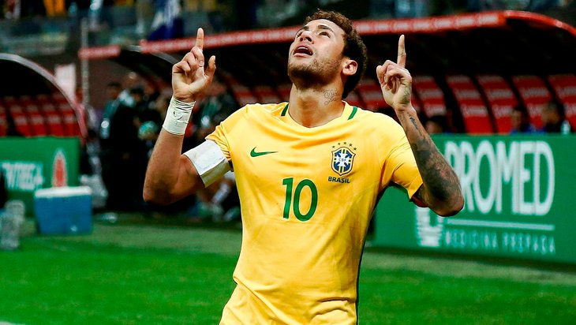
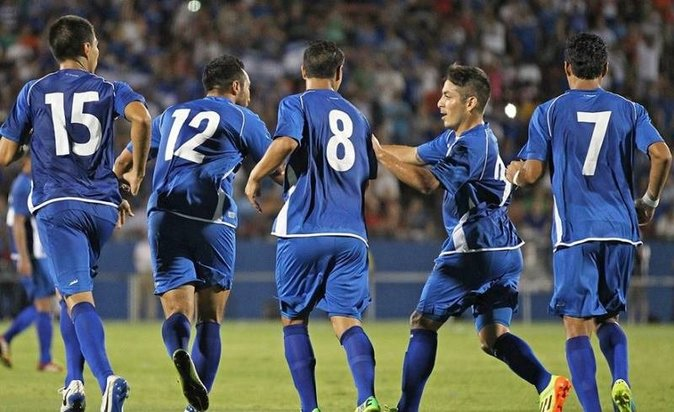

DEPORTE
LA LIGA
Barcelona sufre para ganar en Valladolid, pero es líder en solitario (Ver noticia completa)

El VAR evitó el empate del Valladolid que sobre la hora logró en fuera de juego el empate.
SERÁ EN ESTADOS UNIDOS
Neymar encabeza la lista de convocados por Brasil para el amistoso contra El Salvador (Ver noticia completa)
Los amistosos contra El Salvador y Estados Unidos se jugarán entre el 7 y el 11 de septiembre en suelo estadounidense. Brasil se prepara para su participación en la Copa América, que se disputará a mediados de 2019 en cinco ciudades de esa nación de América del Sur.
NUEVO RANKING
Selección de fútbol de El Salvador se ubica en la posición 72 del Ranking FIFA (Ver noticia completa)
La selección de fútbol de El Salvador, cuyo técnico actual es Carlos de los Cobos, se encuentra en la posición # 7 en el área de CONCACAF.